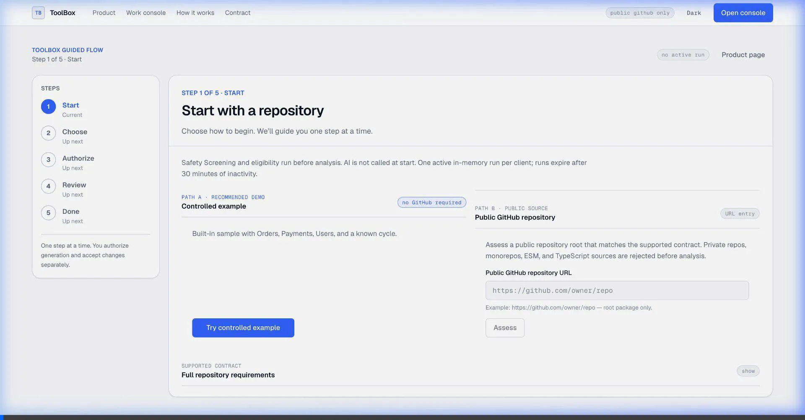

This page consolidates the automated browser test sessions against the production deployment at https://toolbox-con8.onrender.com/.
Target: https://github.com/salauddinn/toolbox-external-smoke
The subagent successfully navigated the UI, inputted the URL, and initiated the assessment. Below is the WebP recording of the session:

Testing was attempted for the other public repositories (Controlled Example, JAlexShulha, edignot, etc.) concurrently. However, because all automated tests originated from the same IP address, they were blocked by the application's IP-based rate limit constraint.
The ToolBox application gracefully handled this high-concurrency event by preventing abuse and displaying clear error messaging.